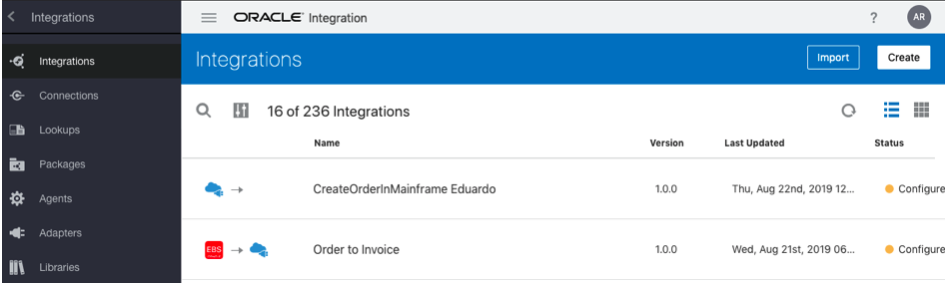

Oracle Integration - Oracle OpenWorld Hands-On Lab
Oracle Integration - Oracle OpenWorld Hands-On Lab
Before You Begin
- Enter your user number: We'll use this user number to customize the integration names in this tutorial. If you leave this blank, these names will contain a placeholder that you can replace with your user number.
- Some steps in this tutorial have a
 icon next to them. Click this icon to copy the name of snippet to your clipboard and then paste it in Oracle Integration.
icon next to them. Click this icon to copy the name of snippet to your clipboard and then paste it in Oracle Integration.
Background
In this hands-on lab, you'll create an integration to update an invoice in Oracle Engagement Cloud.
We'll base this lab on the subscription billing demo that we've discussed during other Oracle OpenWorld sessions.
The objective is to automate the update process to bill subscriptions for use of assets. The integration you'll create will update the number of subscriptions for a particular product.
Then, in a following lab, we'll use this integration to create an automated business process.
Log In
The access to Oracle Integration is secured through Oracle Identity Cloud Service. Users may be granted access to all the Oracle Integration environments in a cloud tenancy, or they may be restricted to specific environments. They may be assigned different roles in each environment.
- Click the Oracle Integration bookmark on your browser to open the Oracle Integration instance.
Enter your user name and password.
- Your user name is
OICTraining1ic
This is the prefix OICTraining1ic followed by the user number you were assigned. - Your password is listed in the document on your desktop.
- Oracle Integration will log all your design activities with this user name.
The Welcome page appears. Check out the tour, videos, and links to learn more. Keep scrolling to find more useful links.
- Your user name is
Click Open Home.
The Home page displays an overview with the current state of your instance. You can drill down to get information about available components, tasks, and instances.

Create an Integration
We'll create an integration to connect to Oracle Engagement cloud and update the subscriptions for a specific product. For this lab, we'll create the integration from scratch but you can also create new versions of existing integrations.
In the Navigation menu, click Integrations, and then click Integrations.
Note that the Navigation shows other capabilities such as process automation and a visual development environment. We will explore some of them later.
For the purpose of this lab, we've already set up the connections to remote systems.
The Integration page lists all the available integrations in your environment. These integrations can be in different stages of the development cycle. You can look at the status column to find out if an integration is running (● Active) or under construction (● Configured).
- Click Create.
Select App Driven Orchestration.
This style lets you run integrations on demand as opposed to scheduled orchestrations that are batch driven and run at specific times of the day. We also support other patterns such as publish and subscribe that let you distribute events to multiple integrations.
- Click Select.
- Name your integration:
Update Subscription Product Bill Lines. - (Optional) Enter a package number. For example: com.oow.UXX.1.1
Click Create.
The Integration canvas appears.
Create a Trigger
- Hover over START and click the plus sign (+).
- Click Create.
- Type REST in the Search textfield to find your rest connection.
Select the Rest Interface connection.
The Configure REST Endpoint dialog appears.
- Name your connection
UpdateSubscription. - Click Next.
- In the Resource Configuration page configure the following values:
- In the operation name field, enter AddLine.
- In the endpoint relative resource URI field, enter
/subscriptions/{SubscriptionPUID}/child/products/ - From the action to perform list, select PATCH.
- Select Configure a request payload for this endpoint.
- Select Configure the endpoint to receive a response.
- Click Next.
In the Request Parameters page, leave the default values, and click Next.
The path or template parameters are automatically added and appears as the default values.
- On the Request page, configure the following values:
- From the request payload format list, select JSON Sample.
- Select JSON Sample for the request payload format.
- Click the <<<inline>>> link.
- Enter the following JSON sample:
{ "BillLine" : [ { "BillLinePUID" : "string", "UsageQuantity" : "0" } ] } - Click OK
- Click Next
- On the Response page, configure the following values:
- Select JSON Sample for the response payload format.
- Click the <<<inline>>> link.
- Enter the following JSON sample:
{ "BillLine" : [ { "BillLinePUID" : "string", "UsageQuantity" : "0" } ] } - Click OK.
- Click Next.
In the Summary page, click Done.
The canvas with the new trigger appears.
- Click Save.
Iterate Over Billing Lines
We might need to update multiple billing lines in the request. The API we'll use to connect to Oracle Engagement Cloud can only update one billing line at a time. So we'll loop over the billing lines to update a single billing line at a time.
- On the canvas, hover over the line that connects the first two activities, and click the plus sign (+).
In the Search field, enter
For.The search results includes connections to other system (Invokes), and activities (Actions).
From the Actions section, select For Each.
The Create Action dialog appears.
- In the Name field, enter
LoopBillLines. - Drag the BillLine element from the Source tree, and drop it on the Repeating Element field.
- In the Current Element Name field, enter
CurrentBillLine. Click Create.
The canvas now displays a loop.
- To have a better view, from the canvas toolbar, from the Layout list, select Horizontal.
- Click Save.
Update Billing Quantity
The loop we just created will update the billing lines for the request in Oracle Engagement Cloud. To do this, we'll connect to Oracle Engagement Cloud.
- Hover over the outgoing transition for the LoopBillLines activity.
- In the Search textfield, enter
Oracle. From the Invokes section, select Oracle CRM.
The Configure REST Endpoint dialog appears.
- Name the endpoint
UpdateBilling. - Click Next.
On the Configure the Required Operation page, leave the default values and click Next.
The resource and verb are selected by default.
To simplify this workshop, we've only provided a single operation. Typically, you would have to choose from multiple resources and operations.
- On the Configure the Request Query Parameters, click Next
On the Summary page, click Done
The Integration canvas appears.
- Click Save.
Add Request Mapping
The data format between applications usually do not match and that is the case here. We can use the map that was put on the canvas to transform the data from the source format to the target Engagement Cloud, format. We need to map each individual field.
Click Map to UpdateBilling, and then click
 .
.The Map to UpdateBilling page appears. Note that there is a tooltip that indicates that there are available recommendations for this data mapping.
Click
 Recommendations.
Recommendations.The following recommended mappings appear:
- SubscriptionPUID ⟶ SubscriptionPUID
- SubscriptionProductPUID ⟶ SubscriptionProductPUID
- BillLinePUID ⟶ BillLinePUID
- UsageQuantity ⟶ UsageQuantity
Click ✓ Apply Recommendations.
A Confirmation message appears informing you that the recommended mappings were applied.
The view changes back to
 Designer.
Designer.Click Validate and then click Close.
The Integration canvas appears.
- Click Save.
Add Response Mapping
Click Map to UpdateSubscription, and then click
.The Map to UpdateSubscription page appears. Note that there is a tooltip that indicates that there are available recommendations for this data mapping.
Click
Recommendations.The following recommended mappings appear:
- BillLine ⟶ BillLine (Note that this mapping automatically generates a loop to to map the repeating elements.)
- BillLinePUID ⟶ BillLinePUID
- UsageQuantity ⟶ UsageQuantity
Click ✓ Apply Recommendations.
A Confirmation message appears informing you that the recommended mappings were applied.
The view changes back to
Designer.Click Validate and then click Close.
The Integration canvas appears.
- Click Save.
Add Tracking Fields
Tracking fields let you identify specific integration instances. A tracking field associates an integration instance with a business identifier. You must define at least one tracking field per integration. You can use tracking fields to track and locate instances.
For example, for an integration that handles orders, you can track the order number. If for some reason the order is missing or delayed, you can search by the order number to locate the order and find out what caused the issue.
In the Integration canvas, click the error icon
 next to the Last Saved field.
next to the Last Saved field.The icon shows the number of errors you need to fix in your integration.
- Click
 next to the Last Saved field.
next to the Last Saved field. - Select Tracking.
- In the Source tree, expand the execute, and then expand the TemplateParameters node.
- Drag the SubscriptionPUID to the first row of the Tracking Fields table.
- Drag the SubscriptionProductPUID to the second row of the Tracking Fields table.
Click Save.
The Integration canvas appears. Note that now there aren't any errors.
- Click Close.
Activate Integration
Although we have finished building our integration, we have not yet made it available to be called. Before it can be used, we need to activate the integration which will make it available for use.
- On the Integrations page, hover over Update Subscription Product Bill Lines.
- Click .
- In the Activate Integration dialog select Enable Tracing, and then select Include Payload.
Click Activate.
A confirmation message informing you that the activation is in progress briefly appears. Then your integration status will change to Action in progress.
Click to refresh the status.
When the status changes to Active, the integration is ready to run.
Test Integration
- On the Integrations page, hover over Update Subscription Product Bill Lines.
- Click and select Test.
- On the Test page, configure the following URI parameters:
- SubscriptionProductPUID:
26009-PRDT-35001 - SubscriptionPUID:
26009
- SubscriptionProductPUID:
- Click the Body tab.
- Enter the following JSON:
{ "BillLine" : [ { "BillLinePUID" : "26009-PRDT-35001-BILL-80616", "UsageQuantity" : "5" } ] } Click Test.
A confirmation message informing you that the request was submitted appears.
- Expand the Response section to verify that you got a successful response.
Click the Instance Id link.
The Tracking page appears. This page shows an outline of the integration you just tested with the runtime details.
View Tracking Information
Click
.The Activity Stream panel displays the list of activities.
- Click Message or Payload to view the payload data for a specific activity.
Click
 to maximize the payload view.
to maximize the payload view.You can now see a maximized view of the request payload. The request payload includes the body you entered, and the template or path parameters.
Safe Harbor
The following is intended to outline our general product direction. It is intended for information purposes only, and may not be incorporated into any contract. It is not a commitment to deliver any material, code, or functionality, and should not be relied upon in making purchasing decisions. The development, release, timing, and pricing of any features or functionality described for Oracle’s products may change and remains at the sole discretion of Oracle Corporation.
Statements in this presentation relating to Oracle’s future plans, expectations, beliefs, intentions and prospects are “forward-looking statements” and are subject to material risks and uncertainties. A detailed discussion of these factors and other risks that affect our business is contained in Oracle’s Securities and Exchange Commission (SEC) filings, including our most recent reports on Form 10-K and Form 10-Q under the heading “Risk Factors.” These filings are available on the SEC’s website or on Oracle’s website at http://www.oracle.com/investor. All information in this presentation is current as of September 2019 and Oracle undertakes no duty to update any statement in light of new information or future events.